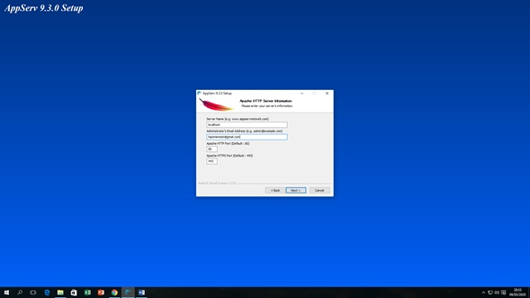
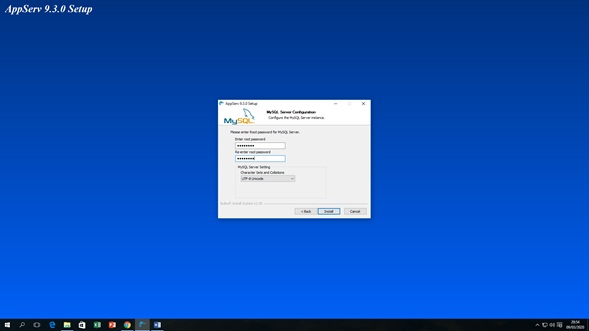
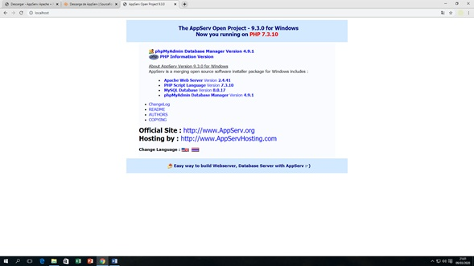
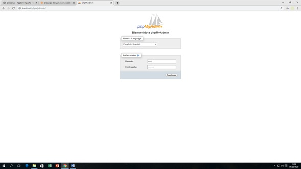
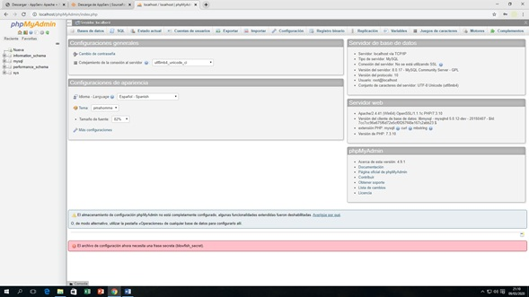

NOMBRE: Jhon Fredy Duque R
GRUPO: 301127_31
CEDULA: 18614936
SKYPE: hipomenes6
TELEFONO: 3126662652
CORREO: hipomenes6@hotmail.com
¿Cómo mitigar el impacto de la empresa “Texas Electronics” la cual está presentando un problema de facturación en sus inventarios?
Diseñar y desarrollar un sistema de información que le permita a la empresa Texas Electronics el ingreso proceso y salida de datos de sus productos tomando así el control de las ventas, inventarios y cálculos en general.
| 1 | La aplicación Web debe de tener una muy buena usabilidad para que el usuario pueda sacar el mayor provecho de esta. |
| 2 | Realizar un análisis de sistemas con el grupo de trabajo de Texas Electronics para poder recolectar la información necesaria la cual utilizaremos para construir el algoritmo que necesitamos. |
| 3 | Implementar los modulos necesarios que permitan realizar los procesos aritmético lógicos que me arrojen los resultados requeridos por el cliente “ Texas Electronics |
El inicio de nuestro proyecto debe de estar orientado específicamente en la recolección de datos con respecto a lo que desea el cliente “ Texas Electronics”, luego con nuestro grupo de trabajo implementaremos el Modelo Vista Controlador (MVC): el cual como sus siglas lo indican comenzaremos en la construcción del Modelo definiendo así la funcionalidad del sistema, tendremos allí la disponibilidad de los datos para utilizarlos y llevarlos a un proceso el cual nos dará una salida cualquiera que necesitemos, este proceso de datos se encuentra enlazado al controlador que nos permitirá : la consulta, modificación y eliminación de los datos en la base de tos, por ultimo tenemos la interfaz del usuario la cual debe de ser muy sencilla y eficaz con muy buena usabilidad que le permita al cliente tener un dialogo con la aplicación web, y la aplicación responder de manera satisfactoria.
| 1 | El sistema de información validara la información del usuario dependiendo del rol que desempeñe |
| 2 | Los datos ingresados en la BD deben de estar muy detallados para lograr listas de información necesaria para el usuario ejemplo: resistencias tipo 220 Ω codificado con código de colores |
| 3 | El sistema de información debe de permitir ingresar, modificar y eliminar datos por el usuario dependiendo de su rol asignado. |
| 4 | El sistema de informacon debe de realizar cálculos aritmético y lógicos para dar salida a información requerida por el usuario ejemplo: ventas,promedios, cantidades. |
| 5 | El sistema de información debe de estrar en comunicación con el ususario por medio de mensajes que saldrán por pantalla anunciando alertas. |
| 6 | 6. La salida de datos que nos proporcione el sistema de información debe de ser física y virtual. |
El software que vamos a implementar en la empresa “ Texas Electronics” debe de estar en la disposición de suplir todas las necesidades del cliente, las cuales son: Controlar las compras a proveedores, ventas al público, inventarios, y cálculos de precio de ventas al público incluyendo impuestos (%) y utilidad para la tienda en (%).
1. Equipo humano 4 personas
2. equipos de cómputo 4
3. Internet
El sistema de información para la empresa “ Texas Electronics” es de gran importancia por tal motivo produce un gran impacto a nivel de directivas y de clientes. Socialmente podemos decir que si el sistema de información“ Texas Electronics” funciona correctamente seria de muy buena ayuda difundirlo en las redes sociales para darlo a conocer a nuevos clientes que serían potencialmente importantes en la economía de la empresa aumentando significativamente las ventas dentro de la empresa llevando a un crecimiento del personal de trabajo o capacitando el actual y delegando nuevas funciones. La empresa “ Texas Electronics” a tomado la decisión de actualizarse tecnológicamente ya que en este presente es de vital importancia el procesamiento de grandes cantidades de datos a velocidades extremas sino se encontraría en desventaja con otras empresas, se debe evolucionar y tomar riesgos para llegar a otro nivel. El impacto ambiental sería positivo en el aspecto de reducción de material como el papel ya que un gran porcentaje de las ventas se realizarían virtualmente, y negativo si se aumenta la cantidad de equipos de cómputo no se estaría contribuyendo mucho a mitigar el calentamiento global.
The client server architecture is a model that allows the union of information systems and that can help each other by providing large-scale digitized data. This process is divided into two parts which are the following server and client. Server: it is all computer equipment that allows me to manage data at high speeds but must have special requirements in order to meet customer expectations. Types of servers: file servers, database servers, transaction servers, object servers, web servers. Client: we can define as client any computer equipment that requests a service from any amount of information stored in the databases. Types of clients: thin client and fat client.
The controller view model is a style of architecture that is used in the development of information systems such as dynamic web; this allows us to separate the three components: 1. Controller: separates user actions, responds to events and actions. 2. Model: access and data management. 3. View: graphical user interface. Interaction between the view and controller model: The user sends a data request, then the controller consults with the model so that it provides the information of the BD; then the controller sends the data in sight and this component organizes and outputs them.




